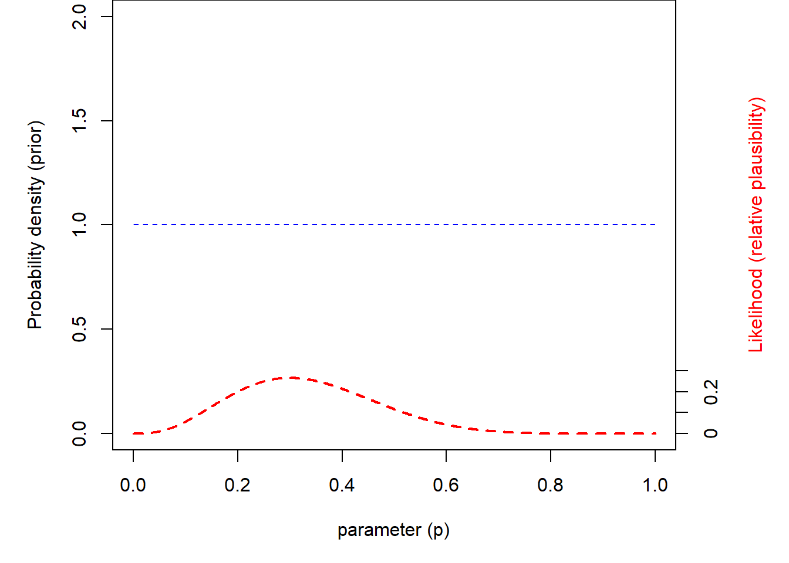
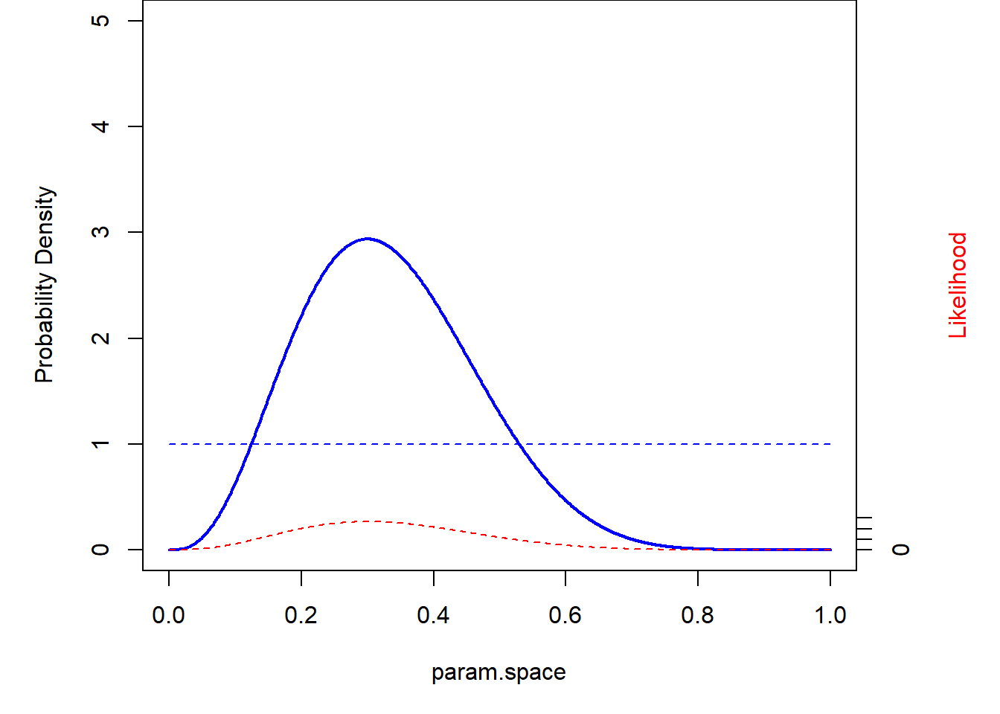

Bayesian Analysis #1: Concepts
NRES 746
September 27, 2016
Bayesian analysis is also likelihood-based, and follows naturally from our previous discussions. The difference is that we are no longer interested in the maximum likelhood estimate and the properties of maximum likelhood estimators. We are now interested in computing our degree of believe in all possible values across parameter space. Effectively, we want a probability distribution that gives us a probability density (or mass) for all possible parameter combinations, that gives us our degree of belief in a particular model (in this case, the set of parameter values) given the observed data.
Play with binomial/beta (conjugate prior)
One of the most intuitive ways to get into Bayesian inference is to start with the binomial distribution. Let’s imagine we know N (N, the number of independent trials, is fixed), but we want to estimate p. Let’s assume we have no prior information, so that any value of p is equally likely.
Set the prior
To set the prior, let’s assume a uniform distribution between 0 and 1:
curve(dunif(x),ylim=c(0,2),col="red")
hist(runif(10000),freq=F,,ylim=c(0,2),col="red")
An alternative way to specify this uniform (flat) prior is to use the beta distribution, with both shape parameters set to 1
curve(dbeta(x,1,1),ylim=c(0,2),col="red")
hist(rbeta(10000,1,1),freq=F,,ylim=c(0,2),col="red")
Conjugate prior
Why choose the beta distribution here? The answer is that the beta is the conjugate prior for the p parameter in the binomial distribution. This makes Bayesian estimation easy, as we will see!
Definition: conjugate prior
A conjugate prior is a distribution that matches the data-generating model such that it has the same form as the likelihood function. In this way, the distributional form of the posterior distribution for a parameter is the same as the prior distribution for that parameter (although the shape of the distribution will change). We will come back to this!
Worked example
Let’s work through an example. Let’s imagine the same frog-call survey we have imagined before. We know the site is occupied. After visiting the site 10 times, we detected the frog (heard its call) 3 times out of 10. We are interested in determining the detection probability.
We know the likelihood of the data across parameter space
data = 3
param.space <- seq(0,1,by=0.001)
likelihood <- dbinom(data,size=10,prob=param.space)
par(mai=c(1,1,0,1))
curve(dbeta(x,1,1),ylim=c(0,2),col="blue",ylab="Probability density",xlab="param.space")
points(param.space,likelihood*5,type="l",col="red",lwd=2)
axis(4,at=seq(0,2,by=0.4),labels = seq(0,0.5,by=.1))
mtext("Likelihood", side=4, col="red",line=3)
Recall that the likelihood curve is NOT a probability distribution. It does not necessarily sum to 1! In Bayesian analyses, we translate the likelihood to a probability using Bayes rule!!
\(Prob(Model|Data) = \frac{Prob(Data|Model)\cdot Prob(Model))}{Prob(Data)}\)
The likelihood is just the \(Prob(Data|Model)\) term…
What is the probability of the data? well, it’s just the sum of the probability of the data across parameter space. Really, \(Prob(Data)\) can be seen as a normalizing constant that is used to convert the numerator of Bayes rule into a probability distribution. Let’s do it first by brute force…
prior <- dbeta(param.space,shape1=1,shape2=1)
#prior
## weight the data likelihood by the prior
weighted.likelihood <- likelihood*prior
## compute normalization constant
normalization.constant <- sum(weighted.likelihood)
## Posterior!!
posterior <- weighted.likelihood/normalization.constant
## Plot it out!
par(mai=c(1,1,0,1))
plot(param.space,prior,ylim=c(0,5),type="l",lwd=2,col="blue",ylab="Probability",xlab="param.space")
points(param.space,posterior*length(param.space),type="l",col="blue",lwd=2,lty=2)
points(param.space,likelihood*5,type="l",col="red",lwd=1)
axis(4,at=seq(0,2,by=0.4),labels = seq(0,0.5,by=.1))
mtext("Likelihood", side=4, col="red",line=3)
Notice that the shape of the posterior looks a lot like the shape of the likelhood surface. What this says to us is that the prior has been overwhelmed by the information content of the data (as summarized by the likelihood surface)
What if we have a more informative prior?
prior <- dbeta(param.space,shape1=15,shape2=5)
#prior
## weight the data likelihood by the prior
weighted.likelihood <- likelihood*prior
## compute normalization constant
normalization.constant <- sum(weighted.likelihood)
## Posterior!!
posterior <- weighted.likelihood/normalization.constant
## Plot it out!
par(mai=c(1,1,0,1))
plot(param.space,prior,ylim=c(0,5),type="l",lwd=2,col="blue",ylab="Probability",xlab="param.space")
points(param.space,posterior*length(param.space),type="l",col="blue",lwd=2,lty=2)
points(param.space,likelihood*5,type="l",col="red",lwd=1)
axis(4,at=seq(0,2,by=0.4),labels = seq(0,0.5,by=.1))
mtext("Likelihood", side=4, col="red",line=3)
What does this tell us?
Okay, now let’s do it the more mathematically elegant way! When we work with a conjugate prior, the updating process is easy. The posterior distribution for the p term in the above example can be computed by:
\(Beta(shape1=prior+k,shape2=prior+(N-k))\)
Let’s do the same thing, now using the conjugate prior method…
### PRIOR
curve(dbeta(x,1,1),ylim=c(0,5),ylab="Prob Density",col="blue",lwd=2,xlab="param.space")
### POSTERIOR
curve(dbeta(x,1+data,1+(10-data)),ylim=c(0,4),ylab="Prob Density",col="blue",lwd=2,lty=2,xlab="param.space",add=T)
And again, this time with an informative prior!
### PRIOR
curve(dbeta(x,15,5),ylim=c(0,5),ylab="Prob Density",col="blue",lwd=2,xlab="param.space")
### POSTERIOR
curve(dbeta(x,15+data,5+(10-data)),ylim=c(0,4),ylab="Prob Density",col="blue",lwd=2,lty=2,xlab="param.space",add=T)
What if there is no nice easy conjugate prior?
One of the reasons Bayesian analysis was less common historically was that there were no mathematically straightforward ways to do the analysis. There still are not BUT we have fast computers and computational algorithms. Basically, we can use various forms of brute force computation to do Bayesian analyses.